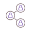

|
Profesional en administración y finanzas con experiencia en administración de sitios web para pequeñas y
medianas empresas en Bogotá, Colombia.
|
|
Tengo experiencia creando y manteniendo sitios web usando el administrador de contenido Wordpress, realizando paginas web corporativas para medianas y pequeñas empresas en Bogota. |
Wordpress
|
|
|
Cuento con conocimientos en instalacion y administracion de servidores web. Cpanel, y shared hosts. a nivel local uso y configuro el XAMPP con PHP y MySql |
Hospedaje Web |
|
Visual Studio Code
|
Uso este editor de código fuente gratuito y de código abierto desarrollado por Microsoft para diseñar y programar sitios web. ya que ess una herramienta potente, versátil y que que se puede utilizar para una amplia gama de tareas de desarrollo. |
Bases de Datos
|
Tengo experiencia en el uso de MySQL para crear y administrar bases de datos. He utilizado MySQL para crear bases de datos para sitios web, aplicaciones web y migracion manual de sitios web coorporativos. | |
Conocimientos Adicionales
|
|
|
Creo que el desarrollo web es una herramienta poderosa que puede utilizarse para resolver problemas y mejorar la vida de las personas, me mociona poder trabajar en proyectos que tengan un impacto positivo en el mundo.
Contacto |
|
||||||